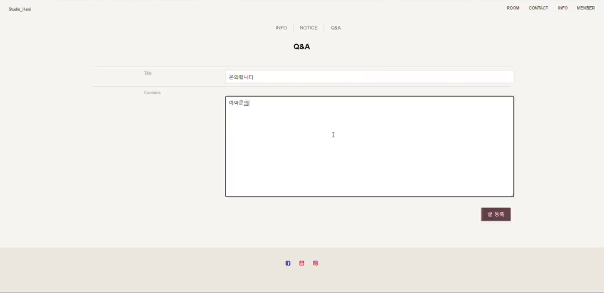
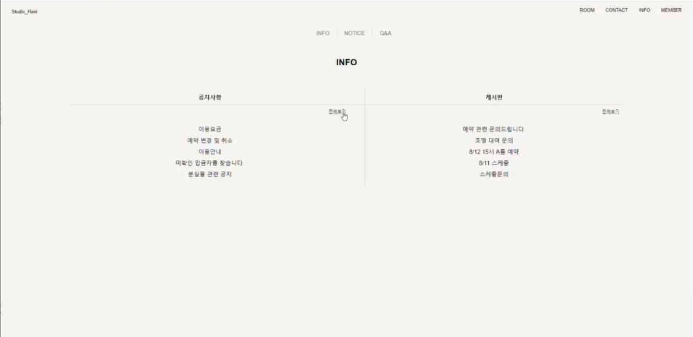

이전에 진행했던 프로젝트를 MVC 패턴의 MODEL2 구조로 변환하고 관리자 기능과 게시판을 추가한 홈페이지입니다. MVC 패턴의 MODEL1과 MODEL2 구조를 이해하는 것을 목표로 진행했습니다.
이전에 순수 자바 파일로 생성한 데이터베이스를 oracleDB를 활용하며 데이터베이스를 생성하였습니다.
CRUD

Create
해당 입력칸을 사용하여 작성이 가능합니다.

Read
최신순 또는 조회수순으로 정렬한 게시글을 원하는갯수(5개로 작업)만큼 출력하여 간단하게 게시판글 확인이 가능
전체보기를 누르면 해당 게시판으로 이동하고, 게시글 제목을 누르면 해당 게시글로 바로 이동이 가능